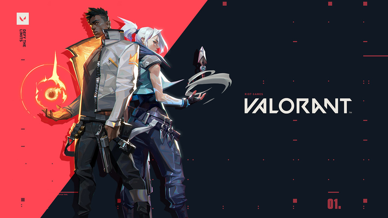
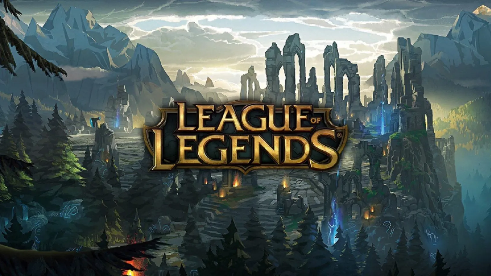
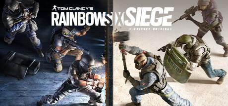

VALORANT
VCT 2026 Kickoff: Team pronti alla battaglia
Le qualificazioni regionali infiammano la scena competitiva. Nuovi roster e strategie pronte a ridefinire il meta internazionale.
Marzo 2026Aggiornamenti, patch note e highlights dal mondo esports competitivo.

Le qualificazioni regionali infiammano la scena competitiva. Nuovi roster e strategie pronte a ridefinire il meta internazionale.
Marzo 2026
Nuovo sistema LP per migliorare matchmaking e competitivita.
Marzo 2026
Nuovo operatore attacker con gadget high-tech cambia il meta.
Marzo 2026Aggiustamenti alle armi per aumentare il bilanciamento competitivo.
Febbraio 2026Campione con abilita legate al tempo debutta nella Landa.
Febbraio 2026Grand final spettacolare e giocate clutch decisive.
Febbraio 2026La mappa storica torna ufficialmente nelle competizioni VCT.
Gennaio 2026Modifiche ai campi per bilanciare early game e obiettivi.
Gennaio 2026Nuovi angoli e rotazioni per migliorare il competitive play.
Gennaio 2026